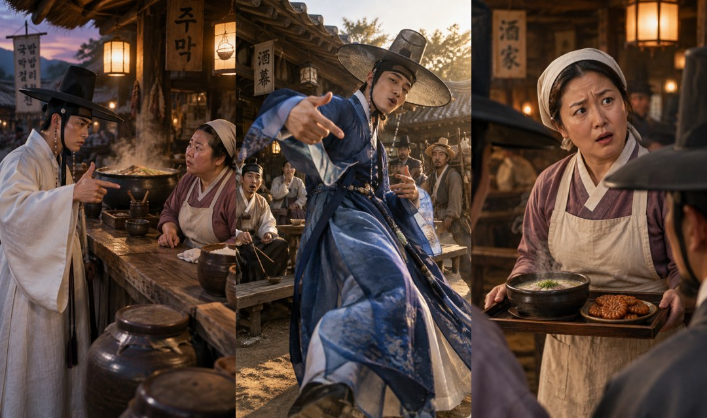

랩이 다르게 나올 때
참고 음원을 넣어도 시드댄스가 랩을 새로 불러서 가사가 바뀔 때가 있어요. 시드댄스로는 화면만 만들고, 소리는 편집할 때 원본으로 덮으면 돼요.
크레용팜 제작 자료
힉스필드 사이트 한 번 안 열고, 채팅창에 말로만 만들었어요.
웹드라마 감독 크레용입니다. 이 영상을 어떻게 만들었는지 연결법부터 실제 프롬프트까지 그대로 정리했어요. 제가 먼저 해 봤으니 필요한 것만 가져가세요.
MCP는 클로드가 다른 프로그램을 직접 다루게 해 주는 연결 방식이에요. 한 번 연결해 두면 채팅창에서 바로 그림과 영상을 뽑을 수 있어요.
https://mcp.higgsfield.ai/mcp힉스필드 유료 구독이 필요해요. API 키는 없어도 돼요. 메뉴 이름은 앱 버전에 따라 조금 다를 수 있어요.

프롬프트를 길게 쓰는 것보다 현장에서 말하듯 지시하는 게 더 잘 먹혔어요. 판단은 제가 하고, 손은 클로드가 움직여요.
갓을 저렇게 쓰는건 좀 불편하다. 본래의 갓 모습이 파괴되어서.
갓을 전통 그대로 바르게 고침
오버하지 말고 그루브 정도 타면 되는디
주모는 붓으로 받아 적으며 은근히 그루브만
차라리 쳐밀도를 한번 보여줘라. 그러고 컷이 넘어가면 튀진 않잖아.
비슷한 구도가 이어지던 자리에 쳐밀도 양반 리액션 컷을 끼움
자막이 좀 심심한디? 화려하고 재밌게 가능?
단어가 박자마다 튀어나오는 자막으로 교체
참고 음원을 넣어도 시드댄스가 랩을 새로 불러서 가사가 바뀔 때가 있어요. 시드댄스로는 화면만 만들고, 소리는 편집할 때 원본으로 덮으면 돼요.
립싱크에 화면 전체를 넣으면 엉뚱한 사람 입이 움직이기도 해요. 말하는 얼굴만 크게 잘라서 입히고 제자리에 다시 얹으면 안전해요.
비슷한 구도가 연달아 붙으면 튀어요. 사이에 다른 인물 리액션을 한 컷 끼우면 자연스럽게 넘어가요.
둥근 얼굴, 날카로운 얼굴, 수염 난 얼굴처럼 프롬프트에 차이를 적어 주세요. 레퍼런스도 사람마다 따로 넣어야 얼굴이 안 겹쳐요.
Keep exactly this same Korean nobleman (same face, same cream and navy dopo robe, same pose holding the small sogo hand drum on his shoulder next to his ear like a boombox, same rapping swagger, same tavern courtyard at dusk). Change only the headwear: he now wears an authentic traditional black horsehair gat hat, worn properly and level with its full round brim and chin strap, exactly as in real Joseon dress. No beanie, no knit cap. Photorealistic, cinematic film grain, 9:16.
Photorealistic Korean historical drama (sageuk), Joseon-dynasty roadside tavern (jumak) at dusk, warm lantern light, handheld documentary-style camera like a variety show. Four clearly different people, each with a distinct face exactly as in their reference image, never the same face twice: (1) the scholar with a round cheerful face, white hanbok with a large black '20' on the back of his robe, traditional black gat worn properly; (2) his friend the nobleman with a sharp, cool face, cream and navy dopo, traditional gat worn properly, holding a small sogo hand drum on his shoulder next to his ear like a boombox the whole time, calm and dignified; (3) the middle-aged tavern hostess in hanbok, apron and headscarf behind the wooden counter with a steaming gukbap cauldron; (4) a bearded laughing bystander nobleman with a white folding fan that reads '쳐밀도' in bold black Hangul calligraphy. Use the reference audio exactly as the dialogue and rap, with accurate lip sync. Multi-shot edit with hard cuts, following this timing: [0-1s] wide establishing shot of the busy tavern. [1-4s] the scholar and his friend step up to the counter, the scholar says to the hostess very politely that he will order by rap. [4-7s] close-up of the hostess at the counter, she bows slightly and answers politely. [7-9s] the bystander nobleman waving his fan toward camera and laughing. [9-14s] medium shot of the scholar rapping his order with serious hip-hop hand gestures, his friend beside him calmly nodding to the beat with the sogo on his shoulder. [14-16s] close-up of the hostess very seriously writing the order on hanji paper with a brush, deadpan, only her head bobbing very slightly to the beat. [16-19s] the scholar keeps rapping, pointing at the cauldron. [19-21s] the hostess keeps writing, a tiny subtle groove in her shoulders, nothing exaggerated. [21-23s] the bystander covers his mouth with the fan, laughing hard. [23-26s] the scholar finishes his rap with a flourish. [26-28s] the hostess smiles politely at him. [28-30s] the scholar bows deeply; the video ends while he is still bowing, no turning back. Natural, understated comedic deadpan acting, realistic faces, cinematic film grain.